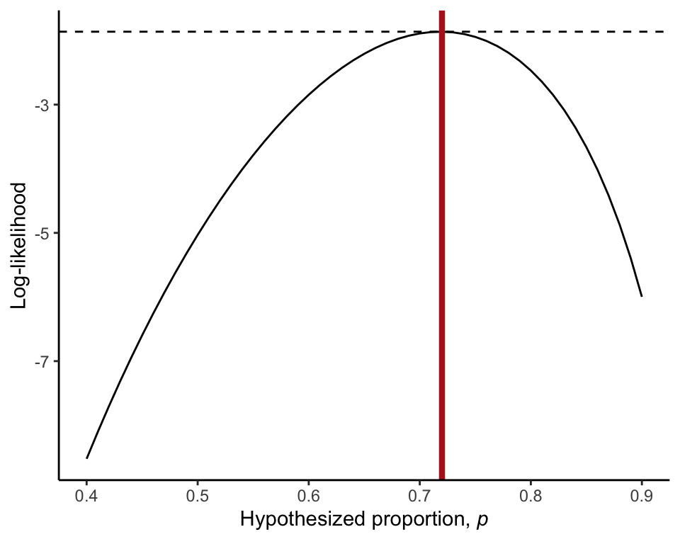
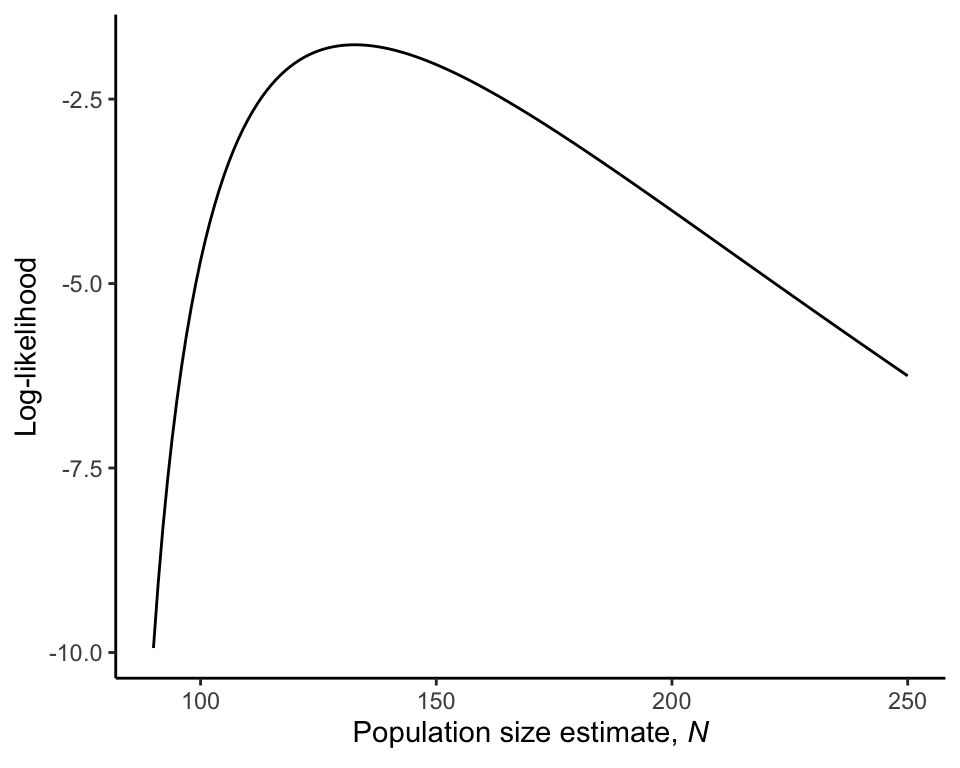

R code for example in Chapter 20:
Likelihood
We used R to analyze all examples in Chapter 20. We put the code here so that you can too.
New methods on this page
-
Binomial log-likelihood of a value for the probability of success:
dbinom(23, size = 32, p = 0.5, log = TRUE) -
Other new methods:
- Log-likelihood curve.
- Log-likelihood ratio test.
- Likelihood-based 95% confidence interval.
Load required packages
We only need ggplot2 for ordinary graphs.
library(ggplot2)Example 20.3 Unruly passengers
Maximum likelihood estimation of the proportion of parasitic wasp individuals that choose the mated butterflies in a choice test. Below, we also apply the log-likelihood ratio test to these data.
Read and inspect data
wasps <- read.csv(url("https://whitlockschluter3e.zoology.ubc.ca/Data/chapter20/chap20e3UnrulyPassengers.csv"))
head(wasps)## choice
## 1 mated
## 2 mated
## 3 mated
## 4 mated
## 5 mated
## 6 matedFrequency table
Frequency table of wasp choice.
table(wasps)## wasps
## mated unmated
## 23 9Likelihood and log-likelihood
The likelihood and log-likelihood of \(p\) = 0.5.
dbinom(23, size = 32, p = 0.5)## [1] 0.00653062dbinom(23, size = 32, p = 0.5, log = TRUE)## [1] -5.031253Log-likelihoods of \(p\)
The log-likelihood of a range of different values of \(p\) (Table 20.3-1) is obtained as follows.
proportion <- seq(0.1, 0.9, by = 0.1)
logLike <- dbinom(23, size = 32, p = proportion, log = TRUE)
data.frame(Proportion = proportion, Loglikelihood = logLike)## Proportion Loglikelihood
## 1 0.1 -36.758245
## 2 0.2 -21.875908
## 3 0.3 -13.751993
## 4 0.4 -8.522661
## 5 0.5 -5.031253
## 6 0.6 -2.846150
## 7 0.7 -1.889823
## 8 0.8 -2.467786
## 9 0.9 -5.997101The log-likelihood calculated using a narrower range of values for \(p\) (Table 20.3-2). The additional quantity dlogLike is the difference between each likelihood and the maximum.
proportion <- seq(0.4, 0.9, by = 0.01)
logLike <- dbinom(23, size = 32, p = proportion, log = TRUE)
dlogLike <- logLike - max(logLike)Let’s put the result into a data frame.
likeResults <- data.frame(Proportion = proportion, Loglikelihood = logLike,
diffLogLike = dlogLike)
head(likeResults)## Proportion Loglikelihood diffLogLike
## 1 0.40 -8.522661 -6.659833
## 2 0.41 -8.105995 -6.243167
## 3 0.42 -7.705601 -5.842773
## 4 0.43 -7.320925 -5.458097
## 5 0.44 -6.951463 -5.088635
## 6 0.45 -6.596754 -4.733925Maximum likelihood estimate
pHat <- proportion[logLike == max(logLike)]
pHat## [1] 0.72Log-likelihood curve
The log-likelihood curve (Figure 20.3-1) is plotted below.
ggplot(data = likeResults, aes(x = Proportion, y = Loglikelihood)) +
geom_line() +
geom_hline(yintercept = max(logLike), linetype = "dashed") +
geom_vline(xintercept = pHat, color = "firebrick", size = 1.5) +
labs(y = "Log-likelihood",
x = expression(paste("Hypothesized proportion, ", italic(p)))) +
theme_classic()
Confidence interval
An approximate likelihood-based 95% confidence interval is obtained as follows.
lower <- max( proportion[proportion <= pHat & logLike <= max(logLike) - 1.92] )
upper <- min( proportion[proportion <= pHat & logLike <= max(logLike) - 1.92] )
c(lower = lower, upper = upper)## lower upper
## 0.55 0.40Log-likelihood ratio test
The log-likelihood ratio test to test the null hypothesis that the population proportion of wasps choosing mated female butterflies is 0.5. G is the test statistic and P is the P-value.
G <- 2 * ( dbinom(23, size = 32, p = pHat, log = TRUE)
- dbinom(23, size = 32, p = 0.5, log = TRUE) )
G## [1] 6.33685P <- 1 - pchisq(G, 1)
P## [1] 0.01182547Example 20.4 Conservation Scoop
Maximum likelihood estimation of elephant population size using mark-recapture data.
Read and inspect data
The data are on the 74 individuals collected in the second sample.
elephant <- read.csv(url("https://whitlockschluter3e.zoology.ubc.ca/Data/chapter20/chap20e4ConservationScoop.csv"))
head(elephant)## class
## 1 recaptured
## 2 recaptured
## 3 recaptured
## 4 recaptured
## 5 recaptured
## 6 recapturedFrequency table
The frequency table of the 74 recaptured or unmarked individuals in the second sample.
table(elephant)## elephant
## recaptured unmarked
## 15 59Quantities needed
These are the quantities needed for the likelihood calculations.
m <- 27 # size of first sample (total marked individuals)
n2 <- 74 # size of second sample
Y <- 15 # number of recaptures in second sampleChoose a range of values of N to try. N is the (unknown) total number of individuals in the population. N must be at least n2 + m - Y (86, in the current example).
N <- 90:250 # The values of N to tryLikelihood and log-likelihood
These are the likelihoods and log-likelihood of each N.
like <- choose(m, Y) * choose(N - m, n2 - Y) / choose(N, n2)
logLike <- lchoose(m, Y) + lchoose(N - m, n2 - Y) - lchoose(N, n2)Likelihood and log-likelihood can also be obtained using R’s built-in function for the hypergeometric distribution.
like <- dhyper(Y, m, N - m, n2)
logLike <- dhyper(Y, m, N - m, n2, log = TRUE)Maximum likelihood estimate
The maximum likelihood estimate of elephant population size.
Nhat <- N[logLike == max(logLike)]
Nhat## [1] 133Log-likelihood curve
The log-likelihood curve (Figure 20.4-1) is produced as follows.
likeResults <- data.frame(N, like, logLike)
ggplot(data = likeResults, aes(x = N, y = logLike)) +
geom_line() +
labs(y = "Log-likelihood",
x = expression(paste("Population size estimate, ", italic(N)))) +
theme_classic()
Confidence interval
The likelihood-based 95% confidence interval for elephant population size is approximately as follows.
lower <- max(N[N <= Nhat & logLike <= max(logLike) - 1.92])
upper <- min(N[N <= Nhat & logLike <= max(logLike) - 1.92])
c(lower = lower, upper = upper)## lower upper
## 104 90